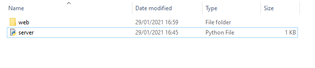
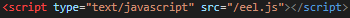

Have you ever been using Discord, and wondered how it works? Have you ever pressed Ctrl-Shift-I and thought to yourself "That looks a lot like a browser's inspect element tab"?(If not, I recommend it)
Well if you've ever wanted to create an application that works like Discord in python, this is the guide for you. In this guide, you will learn how to create a Python Eel application that you can summon and dismiss from the system tray. We'll start with an introduction to the libraries we will be using, then move on to a tutorial on how to create a system tray application in Python. After that, we will go through how to make a web application using Eel. Finally, we'll take the system tray application we created, and update it so that we can use it as a controller for our web app. Sound good? Let's get started!
For this project, we will need three main python libraries, Eel(for the web app), wxPython(for the system tray app) and Selenium(To allow the system tray app to control the web app). Let's go through how to install each of these in turn
Installing wxPython is straightforward, as long as you have python 3. If you don't, use this link to install it(Be sure to install pip along with it). Simply open a command prompt and type: pip install -U wxPython
Similar to wxPython, all you need to do to install Python Eel is type pip install eel into the command prompt
Okay, here's where things get slightly more difficult. First of all, you need to decide which browser you want to use for your web application. Once you have decided, follow this link to the Selenium website, and follow the Quick Reference download link for your chosen browser. Once you have downloaded the correct webdriver for your browser(it is important that you download the correct webdriver for your browser's version number, which you should be able to find in your browser's settings), you should read and follow the install instructions below the Quick Reference table for your browser
There, that's the hard part over. To finish setting up Selenium, simply type pip install seleniuminto the command prompt and wait for it to install.
We are going to start this tutorial by creating a basic system tray application that reveals and hides a window from the user. Later on, we will update this to control our web app, but it is useful for you to understand the basics first. You can find this tutorial here: System Tray Tutorial
The first step in creating our Eel application is to set up our files. Here's what the top level of your project should look like:
As you can see, we have a python file and a folder that we have called "web". The python file is our webserver, it starts our webpage, and contains the functions that we want to use with the website. The folder is our "website", our webserver treats anything in the folder as part of the website. For this part of the tutorial, all we want in the web folder is an HTML file that you should call main.html.
Let's start with our webpage itself. As you can see, it is mostly just a regular HTML page, with a button that calls a javascript function. The parts we're interested in are the line that references a script called "eel.js", and the await eel.getTime function()()
Eel.js is a part of the Eel python package that we installed. It's purpose it to allow one of the most powerful parts of the Eel library to function, the ability to call python functions from a webpage, and return the results to the webpage.
Here, we call a python function called getTime() that we will look at later. In order to call a python function from our webpage, we use the "await" keyword. This causes the javascript function to wait until the python function we called returns a value. To call the function, we start it with "eel.". This tells javascript that we want to use a python function rather than a javascript one. You will notice that we use "()()" rather than "()". This is just a quirk of Eel, you need to include it to call your function.
Next, we will look at the python program that runs our webserver. You will notice that it doesn't require a lot of code, which is one of the advantages of Eel. First, let's look at line 4:
This line tells Eel where our website files are. In this project, we have put them in the "web" folder, so we point Eel at that folder. Next, let's skip ahead to line 10:
In this line, we start our webserver by telling it which file to use as the website's frontpage, and which browser to use(I have selected Microsoft Edge).
Lastly for this part of the tutorial, let's look at the function that we called from our webpage. You will see that we have written "@eel.expose" on line 6. If we start a function with this, it let's us call it from our webpage. Lastly, instead of the return line returning something to python, it returns its value to the javascript function it was called from.
At this stage, you should now have a web application and a system tray application. You'll be pleased to know that it doesn't take much to connect the two. Let's see how it works.

Okay, I need you to pay very careful to what I am about to show you, I'm going to throw a lot of information at you at once, and I need you to keep up. Ready? Okay, here goes nothing. The changes you need to make you your server code are as follows: Go to the last line of the server.py file, and change mode="Edge" to mode=None.
Okay, well, that's the server code sorted, hopefully you managed to get all that. Changing the mode of the eel server to None means that the server will start, but it won't open a browser window. Next, let's go through the changes to your wxPython code:
Go into your system tray application code, and find the section that starts "if __name__ == '__main__'. Go ahead and change it so that it looks like the image above, but replace the webdriver.Edge with webdriver.[your chosen browser]. Also copy the startWebApp() function. After you have done that, go to the top of the program, and add the line "import Threading, os" and below it, the line "from selenium import webdriver"
Let's go through what this code is doing. Firstly, we are starting a thread that calls a function. The function that it calls has one line within it os.system('python server.py'). This has the same effect as typing python server.py into the command prompt, which is to start our webserver application. We do this in a thread because it allows us to continue executing code while the webserver runs. Next, we tell the program to do nothing for 10 seconds, to give the webserver a chance to get started. After this, we create a webdriver object. A webdriver object opens a browser window, and allows us to control it from our program. Next, we tell the driver to go to a website called 'http://localhost:8000/main.html' That is the address of our webserver, so once this line executes, we should have a new window opened in the browser of your choice, displaying our webpage.
The last thing we need to do to get this working is to update two functions in the system tray program, and then remove some code that we don't need. The first is the on_min() function(which controls what happens when the minimse button is pressed), and the other is the on_hello() method(which controls what happens when the maximise button is pressed).
Firstly, let's look at the on_min() function. Change this function so that it looks like the image above. In Selenium, you can't make a window disappear and reappear the way you can with Discord. So instead, we use a little shortcut to achieve the same effect. We tell the webdriver to set the position of our browser to a really large number. This pushes the browser off of the visible screen, so as far as the user is concerned, it has disappeared.
This function operates almost identically to the on_min() function, expect where on_min() pushed the browser window wayyyyyyyyy off of the screen, this function puts it back into the centre of the screen, so that it can be seen again. We now have a way of making the webpage appear and disappear using our system tray application, and so we have successfully made a Discord type application in Python. Feel free to edit the code and html to do whatever you like with it. Before we finish, we need to do a little bit of cleaning up, because now that we are controlling a browser window, we don't need to have code for creating a window in WxPython;Get rid of the OtherFrame class, because we no longer need it.
Well, there we go. You should now have a functioning web application in python, controlled by a system tray icon. I hope you have found this tutorial useful, good luck with whatever project you are working on.